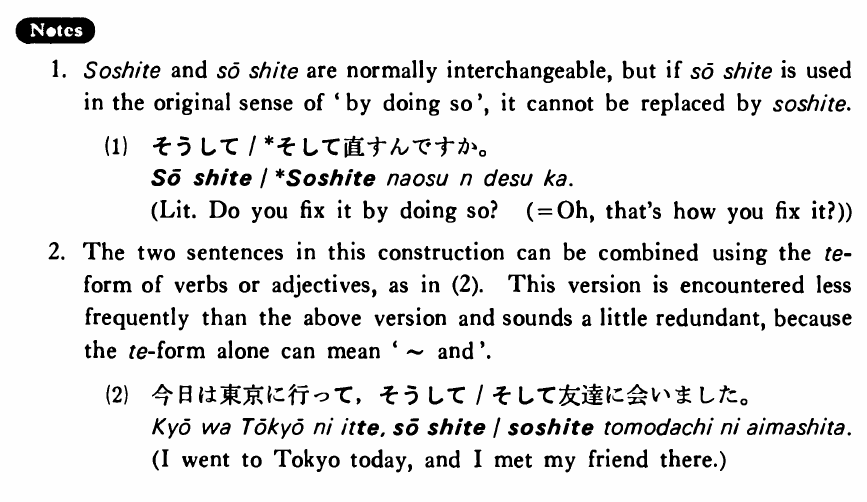

そして (B. 422)
- (ks).
- 今日は東京に行った・行きました。そして友達に会った・会いました。
- I went to Tokyo today. And I met my friend there.
- (a).
- 昨日は朝ゴルフをしました。そして午後はテニスをしました。
- Yesterday I played golf in the morning. And I played tennis in the afternoon.
- (b).
- この映画はつまらない。そして長過ぎる。
- This movie is uninteresting. And it's too long.
- (c).
- この花は奇麗です。そして安いです。
- This flower is pretty. And it is inexpensive.
